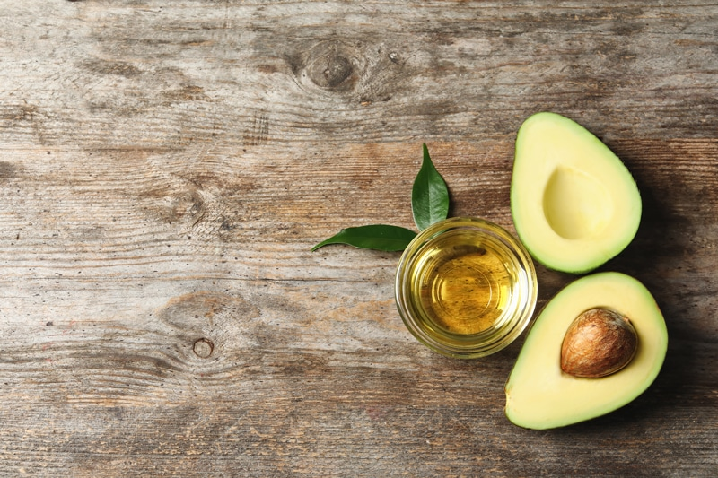
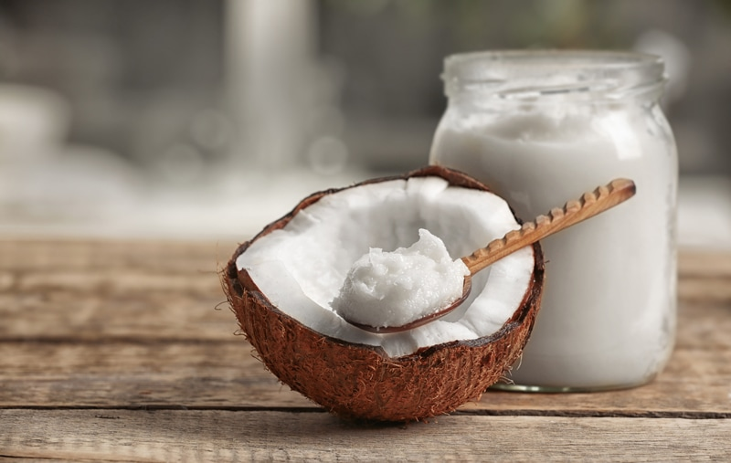
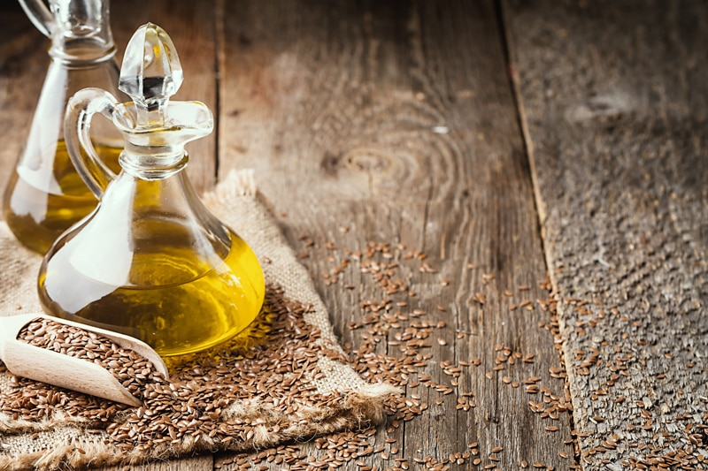
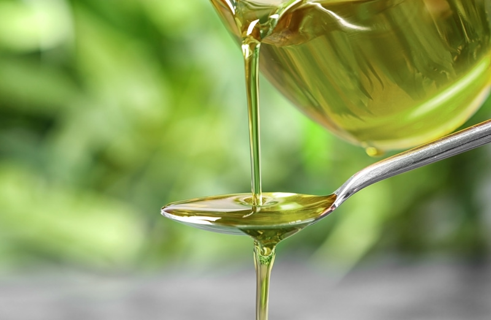
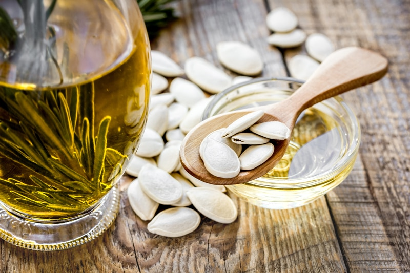
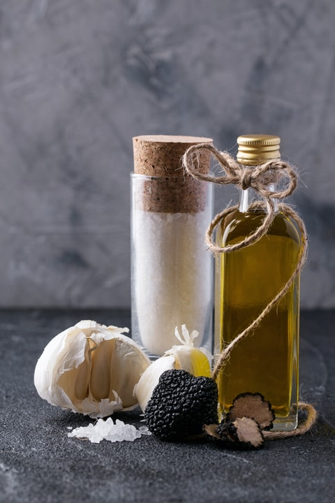

Oil Substitutions
Oils play different roles in raw recipes. Often they can be omitted altogether, but it can shift the overall outcome of the recipe. So if ever in doubt, shoot me a message through the comment section. In most recipes, fats are an essential component to building flavor and texture in a dish. It is important to note that fat acts as a vehicle for flavor that can help evenly distribute other flavors within the dish.
They also play a nutritional roll in recipes. Fat performs many essential functions in the body, including the production of energy and hormones, insulation and lubrication, satiety, nutrient absorption, and brain health
COMMONLY USED OILS

Fats Always aim for cold-pressed, virgin, extra virgin versions. They should be stored in dark containers, glass if possible, and the color should resemble the plant from which it originated. White coconut meat = white coconut oil.
Avocado Oil
Avocado oil is the natural oil pressed from the pulp of an avocado. If you are new to avocado oil, it would be an excellent addition in your pantry to give your recipes a boost of nutrients and flavor. It is highly versatile and easy to incorporate into your diet.
Refined Avocado Oil (not raw)
- Refined avocado oil is one that has been bleached or deodorized after its extraction. Oils treated this way lose a great deal of their smell and color. Refined oils may also have a bit of scent and color added back in.
- Refined avocado oil has a very mild flavor and is usually used for cooking that requires a high smoke point.
Unrefined Avocado Oil (cold-pressed, extra virgin, raw)
- Cold-pressed avocado oil has an avocado flavor, with grassy and butter/mushroom-like flavors.
- Extra virgin avocado oil has been produced by simple cold-pressing using temperatures less than 122 degrees (F) to extract the oil.
- Extra virgin avocado oil from the first cold-press is considered the highest quality oil available.
- Extra virgin avocado oil is the only grade of avocado oil that contains significant amounts of the antioxidant vitamin E.
Its Use
- Add a tablespoon to a smoothie.
- Drizzle over a salad.
- Drizzle it over vegetables before roasting.
- Top hummus off with it.
- Drizzle it over cold soups, such as gazpacho.
- Best used in salad dressings or dipping oil.
- It remains liquid.
Avocado Oil Substitutions

Coconut Oil
Coconut oil is liquid fat obtained from coconut. When coconut oil reaches a temperature of 76 degrees (F) or above; it turns to a liquid. At temperatures below this, it becomes a solid. So as you can see, the oil will be either liquid or solid depending on the temperature of the room. Coconut oil is all fat and can be used to help set or add texture to raw cheesecakes and frozen desserts. This is because these fats harden when chilled. If you are new to coconut oil, there are a few things you should know. Coconut oil comes in refined and unrefined forms. For the best nutrients, I aim for cold-pressed unrefined coconut oil.
Refined Coconut Oil (not raw)
- Refined coconut oil is “dry milled.” Dry milling is a process where the coconuts are baked prior to the oil being extracted. The oil is then “bleached” to kill off microbes and remove any dust particles and insects. Bleaching doesn’t involve a household cleaner, but rather a method by which the oil is passed through a bleaching clay for filtration.
- Refined coconut oil is a clear, mild-tasting oil.
- It’s perfect for people who aren’t a fan of a bold coconut flavor in their foods. (1)
- If you choose refined coconut oil, read the label to ensure your choice is pure coconut oil with no additives.
Unrefined Coconut Oil (cold-pressed)
- Unrefined coconut oil undergoes a process called “wet milling.” Oil is extracted from fresh coconuts, spun down in a centrifuge, and undergoes no bleaching. Wet milling makes unrefined, also known as “virgin” or “pure,” the least processed form of coconut oil available.
- Unrefined coconut oil has a stronger coconut flavor and will impart a coconut-y flavor into most recipes.
- Due to the process of extraction, you receive more nutrients.
Its Use
- Coconut oil is commonly used for making cheesecakes, flans, and frostings.
- It is especially useful for raw recipes in which you want a thicker consistency, but not the added density of nut-based ingredients.
- In small quantities, it adds a creamy texture in sauces, dips, undehydrated treats, etc.
-
After adding coconut butter, oil or cocoa butter to a dish, allow it to chill in the refrigerator. To speed up the setting time, place it in the freezer for a short time.
-
Ensure that the coconut oil is thoroughly blended into the base liquid before chilling or freezing. If the mixture is not blended well, the fat can settle or clump in the final product.
- Add a nutrient-dense tablespoon of coconut oil to your smoothie.
- Adding a spoonful to your coffee is a delicious way to start your day with a huge energy boost!
- Tip – remember the coconut oil firms when cold, so it can clump up when added to other chilled ingredients.
Coconut Oil Substitutions
- Depending on the role that it plays in a raw recipe, I typically won’t change it out.
- Water – in dehydrated recipes that call for coconut oil, it can usually be replaced with water.
- Omit – if it is used in raw cookies or bars, you can usually omit it altogether. Check with recipe creator if unsure.
- Omit – some people notice an “off” taste when using coconut oil in recipes that are dehydrated. You can either decide to omit it or use a different oil such as olive oil. Again, keep in mind the result you want to achieve in the recipe.
- Blended young Thai coconut meat can sometimes work as a replacement to coconut oil but won’t create as firm of a texture.
- Blended cashews with water can also work as a substitution when the recipe needs a creamy base.
- Raw cacao butter, melted.
Olive Oil
Olive oil is liquid fat obtained from olives. Olive Oil turns cloudy when chilled. The taste of the oil is not affected, it’s more a visual thing. To return the olive oil to its transparent state, place the bottle in warm water and leave the oil at room temperature. High-quality extra virgin olive oil should taste like fruit and fresh herbs, ranging from mild to complex and diverse, whereas bad oil tastes like oil.
Refined Olive Oil
- Refined oils have little or no olive aroma, flavor, or color.
- Refined oils lack important antioxidants and anti-inflammatories.
- Refined olive oil is used when cooking with high heat, such as frying. For raw purposes, don’t use.
Unrefined Olive Oil / Extra Virgin (cold-pressed)
- Extra virgin olive oil is considered an unrefined oil since it’s not treated with chemicals or altered by temperature.
- Extra virgin olive oil is made, it retains a truer olive taste, and has a lower level of oleic acid than other olive oil varieties.
Its Use
- It can be used in both sweet and savory dishes.
- Drizzle over hummus.
- Can add moisture to recipes without compromising the end flavor.
- It is great for salad dressings, pestos, and drizzled over a salad.
- When used in marinades, the oil penetrates nicely into the first few layers of the food being marinated.
Olive Oil Substitutions
- Avocado Oil
- Do not use to replace coconut oil in raw cheesecakes, ice creams, or smoothies.
SPECIALTY AND/OR THERAPEUTICALLY USED OILS
The oils listed below are often used for therapeutic reasons. People use them more for their health benefits than for their culinary function. Because of that, it makes it tricky when it comes to replacing them. If they are in a recipe take note of their role and make the best decision from there. Each of these oils has a particular flavor so you can usually replace them with a common oil (listed above), but you typically don’t replace common oils with these oils.

Flaxseed Oil (linseed oil)
Flax or linseed oil is made by pressing flaxseeds and removing the solid mash. In its freshly-pressed and unrefined state, it’s widely accepted as a source of essential fats like omega-3 and omega-6. It is a volatile oil, so you need to be careful that it doesn’t go rancid (as with many oils). Visually, fresh flaxseed oil has a clear, uniform, golden-yellow color free of cloudiness. Another way to test for freshness is by giving it a whiff. It should have a crisp, mild nuttiness similar to raw sunflower or sesame seeds.
Filtered Flaxseed Oil
- Manufacturers that filter their flaxseed oil claim filtering removes the impurities that cause flaxseed oil to go rancid very quickly when exposed to heat, light, or air. The filtering process also eliminates the lignans in the oil which come with health benefits. Lignans are a type of phytonutrient with possible benefits for preventing a range of health conditions.
- Filtered flax oil should be avoided. Flaxseeds contain trans fatty acids, which come from heat-damaged omega-3 fatty acids.
Unfiltered Flaxseed Oil
- Cold-pressed flaxseed oil is a high-quality oil that has been extracted from the flaxseeds at temperatures no higher than 120 degrees (F).
- The flax oil you buy should be packaged in an opaque bottle for protection from light.
- Flaxseed oil should be refrigerated throughout the shipping process and during home storage, even prior to opening. Once opened, all bottles of flax oil should be refrigerated for safety.
Its Use
- Fresh flaxseed tastes like it smells… clean, crisp, and mildly nutty. Conversely, rancid flaxseed tastes bitter, burnt, and assertive.
- Flaxseed oil is perfect for salad dressings, dips, sauces, smoothies, and marinades.
- Caution: To learn about possible interactions with medications, click (here). For example, flaxseed oil may interact with some medications including blood thinners, cholesterol-lowering statins, and diabetes medications.[3]
- You should never apply heat to flaxseed oil.
- Flax oil is typically used for its health benefits rather than its function.
Flaxseed Substitutions
-
- Hemp Oil
- Macadamia Nut Oil
- Olive Oil

Hemp Oil
Hemp oil or hempseed oil is obtained by pressing hemp seeds. Cold-pressed, unrefined hemp oil is dark to clear light green in color, with a nutty flavor. The darker the color, the grassier the flavor. This bit of knowledge will help you determine whether or not you can sub out other oils, using hemp in its place or vice versa.
Refined Hempseed Oil
- Not raw – best to stir clear of it.
- Refined is clear and colorless, with little flavor and lacks natural vitamins and antioxidants.
- Refined hempseed oil is primarily used in body care products. Industrial hempseed oil is used in lubricants, paints, inks, fuel, and plastics.
Unrefined Hempseed Oil (cold-pressed)
- Raw – best choice.
- Unrefined, cold-pressed hemp seed oil is green in color with a nutty flavor.
- Cold-pressed hemp oil preserves hemp’s nutritious content, so it is often called “Nature’s most perfectly balanced oil.”
- It has a limited shelf life and should be stored in the refrigerator once opened.
Its Use
- Due to the nutty flavor, you will want to keep the taste of the recipe in mind when using hemp oil.
- Best used in salad dressings, pesto, drizzled over popcorn and can be added to smoothies in small amounts.
- Hemp oil is typically used for its health benefits rather than its function.
- Stays liquid.
Hemp Oil Substitutions
- Flax Oil (depending on the amount needed)
- Macadamia Nut Oil

Macadamia Nut Oil
Macadamia oil is the non-volatile oil expressed from the nut meat of the macadamia nut. It is clear to slightly amber in color and retains a nutty, buttery flavor, as macadamia nuts are quite strong in their flavor.
Refined Macadamia Nut Oil
- It may have a longer shelf life than unrefined, but it comes with a cost; colorless, virtually odorless, and stripped of nutrients. It is often used in cosmetic products and doesn’t belong in your culinary pantry.
Unrefined Macadamia Nut Oil
- It is produced with low heat to preserve all the healthful goodness, without additives.
Its Use
- Macadamia oil is typically used for its health benefits rather than its function.
- It is an excellent butter replacement when mixed with herbs.
- Macadamia oil also makes a fantastic base for a full-flavored marinade.
Macadamia Nut Substitutions
- Olive Oil
- Avocado Oil
- Do not use in place of coconut oil if the oil is being used to help add structure to a recipe such as in a raw cheesecake.

Pumpkin Seed Oil (pepita oil)
Pumpkin seed oil, also called pepita oil, is the oil extracted from the seeds of a pumpkin. It has an intense nutty taste.
Unrefined (virgin, cold-pressed-raw)
- Be sure to select an oil that has been cold-pressed, which means the oil has been extracted out of the pumpkin seeds using pressure rather than heat. The cold-pressed method of extraction is preferable because it allows the oil to retain its beneficial antioxidants that would be lost or damaged due to heat exposure. (2)
Its Use
- It can be used in place of flax and hemp oil since these types of oil are used more therapeutically than for “cooking” use.
- To keep the valuable ingredients and the full flavor of pumpkin seed oil it should not be heated.
- Pumpkin seed oil is a natural flavor enhancer and is great to use in salads, marinades, and drizzled on soups.
- You may not think it, but it works well in sweet recipes as well. Some even recommend pouring a small amount of pumpkin seed oil over ice cream. The nutty flavor of the oil imparts a unique taste that some prefer as a treat.
Pumpkin Oil Substitutions

Truffle Oil
Truffle oil is a light oil that is infused with pieces of truffle until the oil carries both the flavor and scent of the fungus. Truffles are a fungus like a mushroom, but it grows underground near certain species of trees. The type of truffle is dependent on the kind of tree it grows by.
- Truffle oil imparts an earthy taste and aroma of truffles to a dish.
- There are two varieties: the mild white truffle oil and the more pungent black truffle oil.
- For raw dishes or cooked vegan dishes, I find that the white truffle oil is the best choice. Black truffle oil is very potent and is often used in cooked animal protein dishes.
- If you’re cooking with it, add it at the very end to prevent the flavor from dissipating.
- Truffle oil is expensive, but a little goes a long way.
- There really isn’t a substitute for the unique taste of truffle oil. If you absolutely need one, there are a few options listed below.
Its Use
- Truffle oil can be added to dips, raw cheese recipes, or lightly drizzled over recipes. A little bit goes a very long way.
- Since the taste of truffle oil is in a class of its own, I would be very careful about what you use for a substitute.
- If a recipe calls for truffle oil, you can use olive oil in its place, but not the other way around.
Truffle Oil Substitutions
- Olive Oil
- Avocado Oil
- Flax Oil
- Hemp Oil
© AmieSue.com